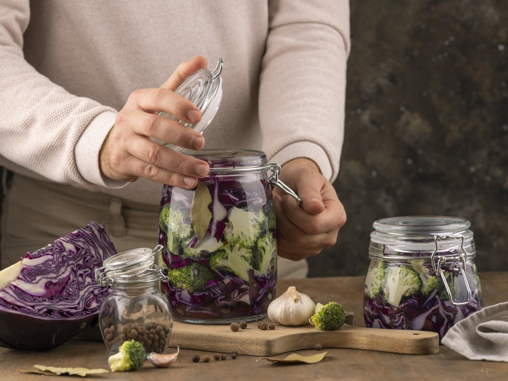

راهنمای تهیه ترشیهای خانگی سالم
آموزش گامبهگام تهیه انواع ترشی و محصولات تخمیری خانگی با رعایت اصول بهداشتی و طعم اصیل سنتی.

این محصول با دقت و وسواس فراوان تولید شده تا کیفیت آن در بالاترین سطح ممکن حفظ شود. تمامی مراحل تولید زیر نظر متخصصان تغذیه انجام میشود و از مواد اولیهی کاملاً طبیعی استفاده میگردد. این رویکرد باعث شده محصولات ما در میان مشتریان از محبوبیت بالایی برخوردار باشند و بازخوردهای مثبت زیادی دریافت کنیم.
طعم اصیل و سنتی، حاصل صبر و دقت در هر مرحله از فرآیند تولید است.
بخش تحقیق و توسعهی ما بهطور مستمر در حال بررسی روشهای جدید برای بهبود کیفیت محصولات است. همکاری نزدیک با کشاورزان محلی، استفاده از مواد اولیهی فصلی و رعایت استانداردهای بهداشتی از جمله اصولی هستند که در تمام مراحل تولید رعایت میشوند.
آموزش گامبهگام تهیه انواع ترشی و محصولات تخمیری خانگی با رعایت اصول بهداشتی و طعم اصیل سنتی.

بررسی نقش محصولات تخمیری در تقویت سیستم گوارش و افزایش باکتریهای مفید بدن.

چرا محصولات تخمیر طبیعی نسبت به محصولات صنعتی حاوی نگهدارنده، انتخاب سالمتری هستند.